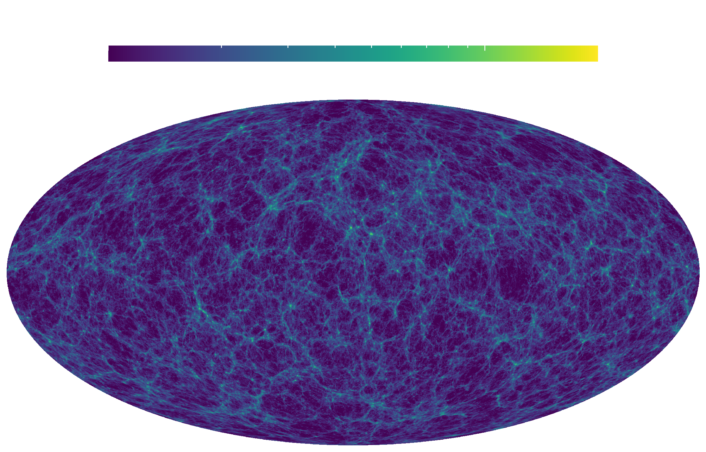
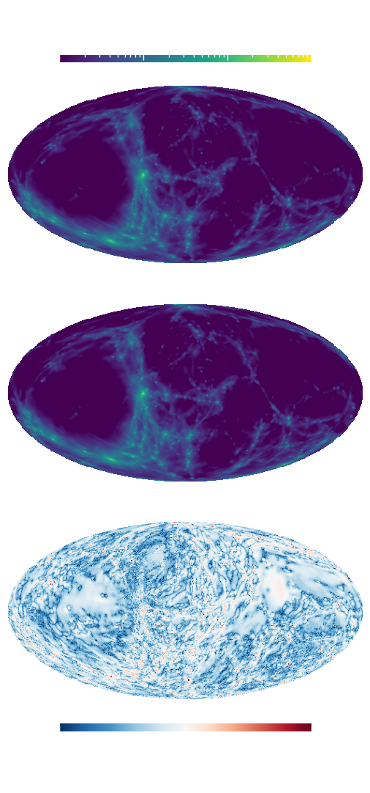
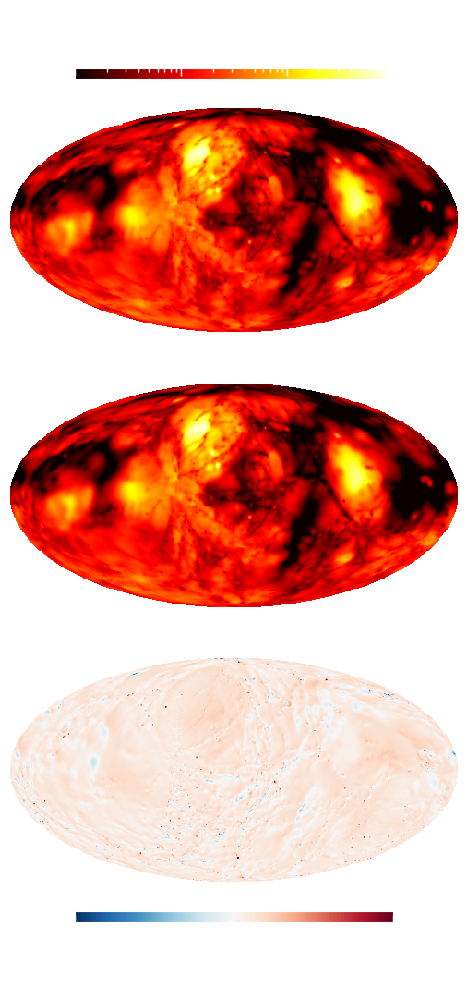

Mapping SPH Data to an allsky HealPix map
You can also use SPHtoGrid.jl to do allsky projections of your simulations. Here is an example of this for one of the simulations of the LOCALIZATION project (Dolag et. al. 2023) :

Single core mapping
You can construct healpix maps on a single core with
SPHtoGrid.healpix_map — Functionhealpix_map(Pos, Hsml, M, Rho, Bin_q, Weights;
center::Vector{<:Real}=[0.0, 0.0, 0.0],
radius_limits::Vector{<:Real}=[0.0, Inf],
Nside::Integer=1024,
kernel::AbstractSPHKernel,
calc_mean::Bool=true
show_progress::Bool=true,
output_from_all_workers::Bool=false)Calculate an allsky map from SPH particles. Returns two HealpixMaps: (image, weight_image). To reduce the image afterwards divide image by weight_image.
Arguments:
Pos: Positions of particles in physical code unitsHSML: hsml of particles in physical code unitsM: Mass of particles in physical code unitsBin_Q: Quantitiy for binning in arb. unitsWeights: Weights for mapcenter: Position from which projection is looking outwards in physical code unitsradius_limits: Inner and outer radius of the shell that should be mappedNside: Nside for healpix map, has to be a power of 2calc_mean: Calculate the mean along the line of sight. If set tofalseonly particles withBin_Q > 0contribute to the map.show_progress: Print a progress baroutput_from_all_workers: Allow output from multiple workers. If set to false only the main process prints a progress bar.
Example:
using GadgetIO, GadgetUnits
using SPHtoGrid, SPHKernels
# helper function to get maps
function T_maps_of_file(snap_file)
# read all data
blocks = ["POS", "MASS", "HSML", "RHO", "U"]
data = Dict( block => read_block(snap_file, block, parttype=0) for block ∈ blocks )
# convert to physical code units
h = GadgetIO.read_header(snap_file)
GU = GadgetPhysical(h)
pos = data["POS"] .* GU.x_physical
hsml = data["HSML"] .* GU.x_physical
rho = data["RHO"] .* GU.rho_physical
mass = data["MASS"] .* GU.m_physical
# convert to cgs units
T_K = data["U"] .* GU.T_K
# define map parameters
kernel = WendlandC4(2)
Nside = 1024
# position the observer at the center of the box
center = 0.5h.boxsize .* ones(3) .* GU.x_physical
# map a 10 Mpc slide at a distance of 5 Mpc
radius_limits = [5_000.0, 15_000.0]
map, w_map = healpix_map(pos, hsml, mass, rho, T_K, rho, show_progress=true;
center, kernel, Nside, radius_limits)
return map, w_map
end
# run the map making
allsky, weights = mapping_function()
# reduce the image
@inbounds for i ∈ eachindex(allsky)
if !isnan(weights[i]) && !iszero(weights[i]) && !isinf(weights[i])
allsky[i] /= weights[i]
end
end
# save the map
saveToFITS(allsky, allsky_filename)Distributed mapping
Usually these allsky maps are performed over whole boxes that may consist of multiple sub-snapshots. To allow for a parallel execution there's a helper function
SPHtoGrid.distributed_allsky_map — Functiondistributed_allsky_map( allsky_filename::String,
Nside::Integer, Nsubfiles::Integer,
mapping_function::Function;
reduce_image::Bool=true)Dynamically dispatches workers to compute one allsky map per subfile, sum up the results and save to a fits file.
Arguments
allsky_filename::String: Name of the file under which the image should be savedNside::Integer:Nsidefor healpix map, must be a power of 2!Nside = 2^N.Nsubfiles::Integer: Number of subfiles the snapshot is distributed over.mapping_function::Function: The function to be executed per subfile. Must have a call toallsky_mapas return value.reduce_image: If the final image should be divided by the weight image set totrue
Example:
# we run this example on a SLURM cluster
using Distributed, ClusterManagers
addprocs_slurm(parse(Int64, ENV["SLURM_NTASKS"]))
@everywhere using GadgetIO, GadgetUnits
@everywhere using SPHKernels, SPHtoGrid
@everywhere using Base.Threads
# helper function for the mapping
@everywhere function T_maps_of_subfile(subfile)
println("T: subfile $subfile running on $(nthreads()) threads")
flush(stdout); flush(stderr)
# read data and convert units
h = GadgetIO.read_header(snap_file)
GU = GadgetPhysical(h)
hsml = read_block(snap_base * ".$subfile", "HSML", parttype=0) .* GU.x_physical
rho = read_block(snap_base * ".$subfile", "RHO", parttype=0) .* GU.rho_physical
mass = read_block(snap_base * ".$subfile", "RHO", parttype=0) .* GU.rho_physical
T_K = read_block(snap_base * ".$subfile", "U", parttype=0) .* GU.T_K
pos = read_block(snap_base * ".$subfile", "POS", parttype=0) .* GU.x_physical
# define map parameters
kernel = WendlandC4(2)
Nside = 1024
# position the observer at the center of the box
center = 0.5h.boxsize .* ones(3) .* GU.x_physical
# map a 10 Mpc slide at a distance of 5 Mpc
radius_limits = [5_000.0, 15_000.0]
# run the mapping
allsky, weights = healpix_map(pos, hsml, mass, rho, T_K, rho, show_progress=true;
center, kernel, Nside, radius_limits)
# important! de-allocate data to avoid memory overflow!
pos = nothing
hsml = nothing
rho = nothing
mass = nothing
T_K = nothing
kernel = nothing
Nside = nothing
center = nothing
radius_limits = nothing
# manually run garbage collector
GC.gc()
# return map
return allsky, weights
end
Nside = 1024
Nsubfiles = 1024
filename = "T_allsky.fits"
# this function takes care of mapping, image reduction
distributed_allsky_map(filename, Nside, Nsubfiles, T_maps_of_subfile, reduce_image=true)Comparison to Smac
As a reference for the mapping we use Smac (Dolag et al. 2005). You can see the comparison with the relative error in the following images. Please note that the bulk of the error in the density weighted map stems from a slightly different calculation of the temperature.
| Line-of-sight integration | Density weighted |
|---|---|
|  |  |